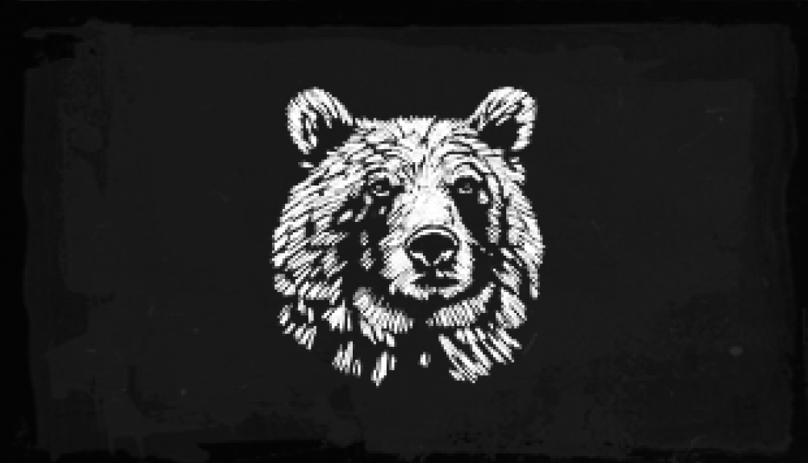
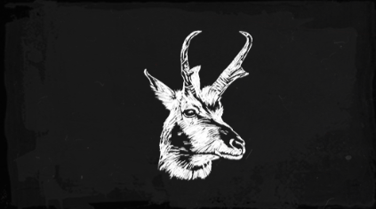
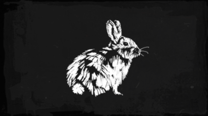
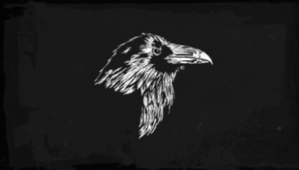
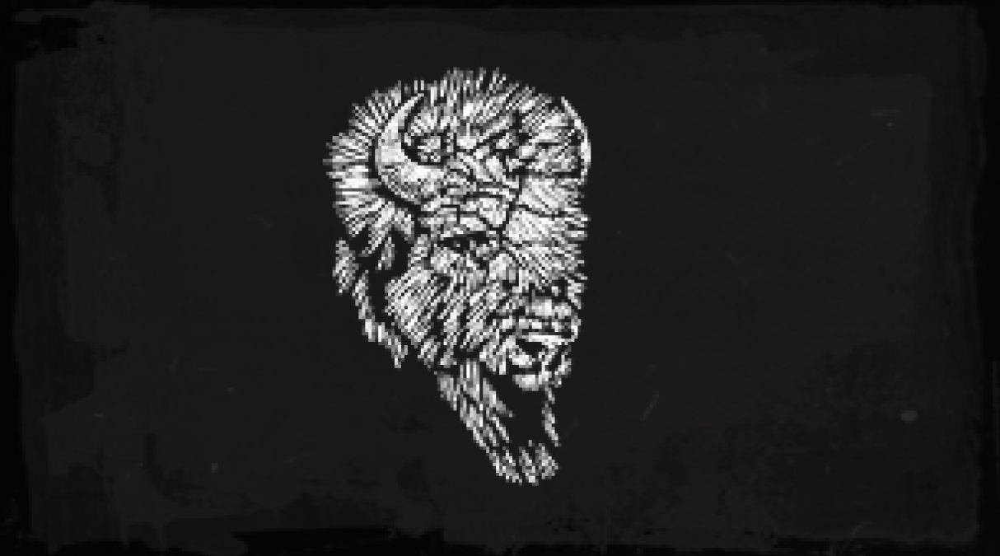
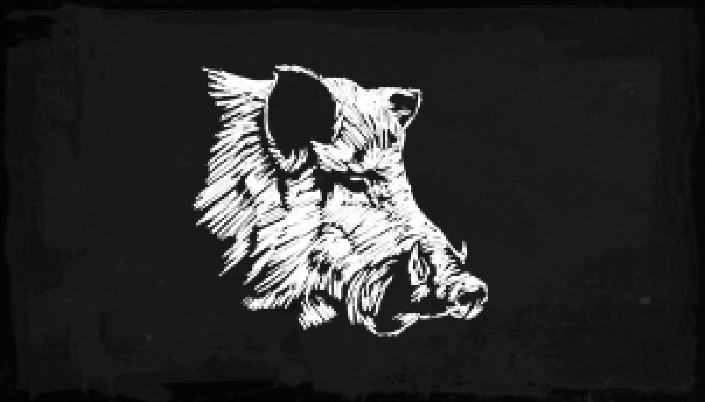

A pele perfeita do urso pode ser usada para criar um par de chaparreiras
Um couro perfeito de jacaré pode ser usado para fazer uma sela

Pele perfeita de uma antilocapra pode ser usada para criar um colete

A pele perfeita de um coelho pode ser usada para criar um chapéu

As penas de uma Gralha podem ser usados para criar acessórios para o chapéu

Pode se usar na receita de carne de primeira com tomilho

A pele perfeita de um javali pode ser usada para criar uma sela